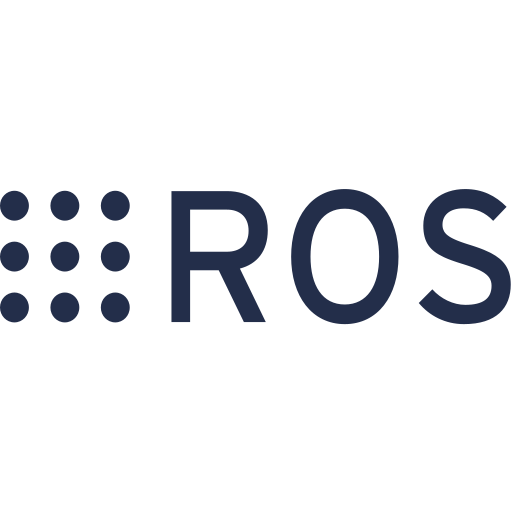

Sistema de Navegación Autónoma para TurtleBot con ROS2
Sobre el proyecto
Este proyecto consiste en el desarrollo de un sistema de navegación autónoma para un TurtleBot utilizando ROS2. El sistema integra un planificador global de rutas, un controlador de seguimiento y un mecanismo reactivo de detección y evasión de obstáculos.
El planificador implementa el algoritmo de búsqueda óptima A* sobre una matriz de costes generada a partir de un mapa de ocupación bidimensional (nav_msgs/OccupancyGrid). A diferencia de una búsqueda basada únicamente en obstáculos, el algoritmo tiene en cuenta zonas de inflación cercanas a las paredes, permitiendo generar trayectorias que equilibran distancia y seguridad.
Características principales
- Planificación global con A*: Implementación del algoritmo de búsqueda heurística A* utilizando una conectividad de 8 direcciones y distancia euclídea como función heurística.
- Matriz de costes continua: Procesamiento de mapas OccupancyGrid de ROS para diferenciar entre espacio libre, obstáculos y zonas de inflación, penalizando las trayectorias cercanas a obstáculos.
- Seguimiento de trayectoria: Implementación de una estrategia basada en Pure Pursuit para seleccionar dinámicamente puntos intermedios de la ruta y guiar al robot hacia el objetivo.
- Detección de obstáculos con LiDAR: Monitorización del entorno mediante mensajes LaserScan y detección de posibles colisiones en el área frontal del robot.
- Evasión reactiva: Implementación de Campos Potenciales Artificiales (APF) que combinan fuerzas de atracción hacia el objetivo y fuerzas de repulsión generadas por obstáculos cercanos.
Mi aportación
Participé en el desarrollo del sistema de navegación autónoma, implementando los principales componentes encargados de la planificación y ejecución de rutas.
Desarrollé un planificador A* capaz de trabajar sobre mapas de costes continuos, incluyendo penalizaciones por proximidad a obstáculos. También implementé la transformación entre coordenadas reales y discretas, la validación de estados y la reconstrucción de la trayectoria final.
Además, trabajé en el controlador del TurtleBot, integrando el seguimiento de rutas mediante puntos de referencia, la lectura del LiDAR y un sistema reactivo de evasión de obstáculos mediante campos potenciales artificiales.
Núcleo técnico del proyecto

ROS2